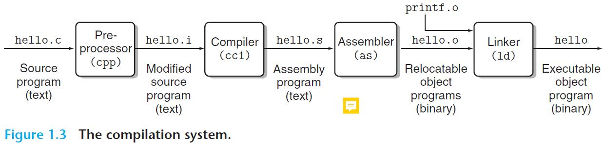

即使不做计算机的底层工作，对于计算机的了解也同样重要。因此，我决定重读 CSAPP 一书，并简要作此笔记。
CSAPP 的第一章名称为 Tour of Computer Systems, 实际上是关于计算机系统的一个概论。
# 前言
这本书的前言也有些意思。其中提到的几点值得注意：
- 本书是对适用于全体计算机系统的一些长久概念 (enduring concepts) 的解释，是从程序员视角出发的。
- 本书不倾向于对系统的某一部分（例如体系结构、操作系统、编译器或计算机网络等）研究，而是覆盖一个程序员所需的各方面知识。
- 本书主要着眼于 Linux 上的
C/C++程序，需要读者对C/C++,Java有基本的了解。
# 从 Hello World 开始
一个基本的 C 程序如下图所示，这是一个采用 ASCII 编码的文本文件 (text file), 又称流式文件。非流式文件称为二进制文件 (binary file).
#include <stdio.h> | |
int main() { | |
printf("Hello World!\n"); | |
return 0; | |
} |
上述 hello.c 文件的编译过程如下图所示：

其主要分为四个阶段：
- 预处理阶段 (preprocessing phase): 处理以
#为开头的指令，生成一个后缀为.i的C语言程序。 - 编译阶段 (compilation phase): 借助编译器将
.i文件翻译为汇编语言程序 (assembly-language program). 其中的main如下所示：
不同的语言在编译阶段会转化为相同的汇编语言。main: subq $8, %rsp movl $.LC0, %edi call puts movl $0, %eax addq $8, %rsp ret - 汇编阶段 (assembly phase): 将汇编语言转化为以
.o为后缀的机器语言程序。这个程序是二进制文件，因此采用文本编辑器打开会乱码。 - 链接阶段 (linking phase): 将位于标准库中的函数 (
printf) 以另外的.o文件形式 (printf.o) 链接到先前生成的机器语言程序 (hello.o) 上，形成完整的可执行文件 (executable file).